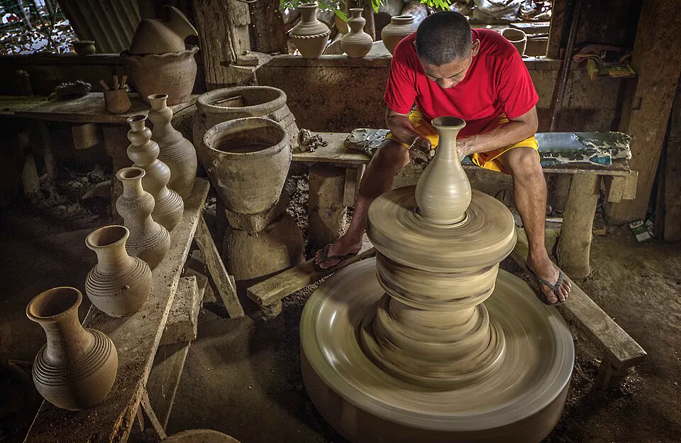

Clay, carabao and fire
The burnay jars of Vigan, mixed underfoot by a carabao, thrown on a wheel turned by the potter’s foot, and fired for a day and a night.

A few streets from Calle Crisologo lies Pagburnayan, the district named for the jars made there. Burnay are unglazed earthen jars, dark brown and heavy, and for generations they sat in every Ilocano kitchen and storeroom. They held drinking water. They held salt. And they held the slow, fermented foods the region is known for: bagoong, the fish paste, and basi, the sugarcane wine.
A jar matters because of what it keeps. A good burnay seals out light and heat and does not taint what it holds, so food made at harvest lasts into the lean months. The craft is tied to Chinese potters who settled in Vigan, and one of the workshops still working in Pagburnayan traces its kiln back to 1922.
Below, a jar goes from a heap of clay to a storeroom shelf. Scroll, and the model builds each stage.
From clay to jar, in six stages
Drag the model to turn it. On the wheel, keep scrolling: the jar rises as you go.
Clay and sand1 of 6
- 1
Clay and sand
A burnay needs only clay, water and fine sand. The clay is dug from deposits around Vigan, among them the large beds at Bulala, and carted to the workshop.
- 2
Mixed underfoot
Clay, sand and water go into a shallow round pit, and a carabao walks circles through it. Round and round, its weight works the mixture until it has an even, fine consistency.
- 3
Thrown on the wheel
The potter kneads the clay to warm it and pick out stones, dusts it with fine sand, and centres it on a wheel he spins with his foot. The jar rises from the base: belly first, then shoulder, then lip.
- 4
Drying in the shade
Fresh jars are soft and pale. They dry slowly out of the sun, so the walls shrink evenly and do not crack before the fire.
- 5
A day and a night of fire
The jars are stacked inside a long brick kiln that climbs a slope, often called a dragon kiln, and fed with wood. The firing runs about a day and a night. The heat, reported at around 1,200 °C, turns the clay dark and hard.
- 6
Kept for years
Out of the kiln, the jars go to work: water jars, salt jars, jars for bagoong and basi, jars for the molasses that sweets like bucayo need. A well-fired burnay can serve a household for many years.
Why a jar is heritage
It is easy to see a burnay as a container. In the Ilocos it is closer to a kitchen tool that made a whole food culture possible. Fermented fish, cane wine and vinegar all depend on vessels that keep a steady, dark, cool interior for months. Plastic and glass replaced many jars in daily use, but cooks who make bagoong and basi the old way still prefer them.
The jar matters because of what it keeps: the harvest, carried into the lean months.

What is changing
Only a few producers remain in Pagburnayan. Some of the long brick kilns are giving way to electric ones. A 2024 report warned that the craft is fading as its older masters age, and that few young people are learning the wheel.
The workshops survive partly on visitors. Many let guests try the kick wheel, which is harder than it looks, and sell jars of every size. Buying a small jar, and asking the potter how it was fired, is one of the simplest ways to keep the kilns burning.